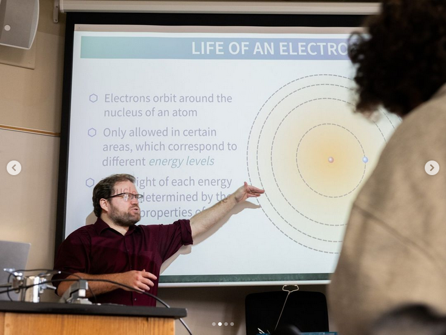
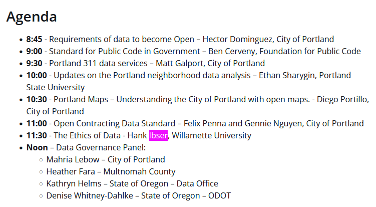
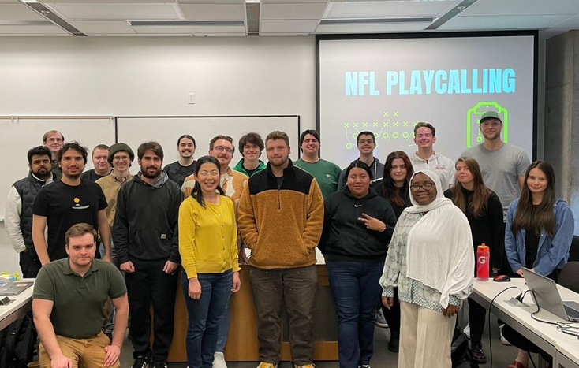

Spring 2025
For: CS Students with CS 151 or later
Prof. Calvin
18 November 2024
CS 152: Data Structures
|
EXTREME |
|---|

 |
The second semester of your first year of Python, the world's finest general purpose programming language! Unlocks all upper-level CS courses: Web development, Cryptography, Mobile App, etc. Liking this class is not correlated with liking CS 151; it's its own thing. |
|---|
MATH 251: Fndns of Adv Math
|
High |
|---|

|
This class will teach you how to think. It is only required for one more CS class: Algorithms, a Fall only course. Taking this early unlocks cool, fun math classes. Pictured is Peter Otto, a completely different but also cool math professor. |
|---|
DATA 275: Data in the Cosmos
|
CS 151 |
 |
|---|
|  |
Choose R or Python Work in partners on real world data/computing problems. Do some machine learning. Interdisciplinary. Knowing algebra+geometry helps Only CS/DS elective to fulfill NATSCI gen ed req. |
|---|
DATA 352W: Ethics, Teamwork, Communication
|
Either 151 |
 |
|---|
|  |
Write and collaborate with peers about real world problems. Read and discuss books and articles on data science. Develop portfolio materials. Fulfill multiple graduation requirements. |
|---|
CS 370: Python for Data Science
|
Either 151 |
 |
|---|
|  |
Learn about the most powerful and popular data science libraries in use:
Learn the theory and practice of data science in a computing context. |
|---|
Takeaways
- Any vague interest in CS?
- CS 152: Data Structures ASAP
- Majoring in CS?
- Take MATH 251W
- Any vague interest in DS?
- DATA 151 if you haven't.
- CS 370 for resume
- DATA 275 for graduation
- Graduating soon?
- DATA 352W
- DATA 275/352 are yearly, not pre-reqs for anything, and can be delayed.
About Me
- Name
- Calvin Deutschbein
- Refer to me as:
- Professor Calvin
- they/them
- Responsibilities:
- Computer Science Professor
- CS/DS Adviser
- Email:
- ckdeutschbein@willamette.edu
- Website:
- cd-public.github.io
- Second Favorite Alien Film:
- Alien: Romulus (2024)
Registration opens 11/18 (This AM)
- Peep these dates:
- Registration loosely follows what year you are.
| Year | Credits | Reg. Date | Reg. Day |
|---|---|---|---|
| 4 | 92+ | 11/18 | Monday |
| 3 | 60+ | 11/19 | Tuesday |
| 2 | 28+ | 11/21 | Thursday |
| 1 | Any | 11/25 | Monday |
| Open | 12/02 | Monday |
We want you to take classes you want to take and to graduate on time.
Undeclared?
- So you want to major in Computer Science or Data Science?
- Email registrar@willamette.edu.
- Copy me.
- Include your ID #
- Say which major(s) you want to declare.
- You can add and/or drop majors and advisers anytime.
- I will approve then check your student progress on SAGE.
Subject: Major Declaration Dear Registrar, I hope this email finds you well. My name is [Your First Name] [Your Last Name], and I am writing to formally declare my intent to major in Computer Science. My seven-digit student ID number is [Your Student ID Number]. I have also copied Prof. Calvin, at ckdeutschbein@willamette.edu, who has offered to be my in-major adviser. Please let me know if there are any additional steps or requirements I need to complete to formalize my major declaration. Thank you for your time and support. Sincerely, [Your First Name] [Your Last Name]
If you are considering a double major, just declare it so it's easier to keep track.
I do a lot of email/discord, and I meet in person MWF PM, and by Zoom TTh all day.
Advising Process
- Are you sure there aren't *any* other advisers?
- Click me!
- Good choices:
- Jed Rembold,
- Lucas Cordova,
- Fred Agbo
- I'd pick via CS 152 (Cordova) or DATA 275 (Rembold) for now.
Requirements:
What's up with the 3+1 BS/MS.
- Basically, it's the same for the first few years, just don't take DATA-352W.
- Or do, there's no rules.
- Talk to me or your advisor ASAP.
- BS/MS Data Science is an established program in Salem or Portland.
- BS/MS Computer Science is an established program in Portland and nascent program in Salem.
The M.S. is a PROFESSIONAL and TERMINAL degree. It is not a research degree, does not have a thesis component, and is not intended to prepare students for doctoral (Ph.D.) study and students interested in graduate school with a research focus should consult their advisor before committing to the program. As a professional degree, the M.S. is tuition-funded, rather than grant-funded, though undergraduate financial aid agreements apply. Students are considered undergraduates for three years of two semesters, then graduate/professional students for one year of three semesters. Students must ensure they meet the undergraduate credit requirement to graduate on time. In practice, this means taking four full courses (16 credit hours) every semester during the three undergraduate years, and an additional course over the three years, usually by taking two half-courses (2 credit hours each) to avoid additional tuition costs. I recommend MATH 102X, MATH 153, and ARTH 10X classes. There are a few courses that Dual Degree students should not take because they are redundant with graduate level coursework: DATA 252 : Models and Machine Learning DATA 351 : Data Management with SQL DATA 352W: Ethics, Teamwork, Communications - Be advised of the tuition for the BS/MS - one semester at graduate/professional rates. Click me!
Graduation Requirements
Besides a major, you have general education and credit hour requirements to graduate:
- 5x General Education
- 2x AH (Arts & Humanities)
- 3x Sciences
- 1x MS (Mathematical)
- 1x NS (Natural)
- 1x SS (Social)
- 4x WE
- 2x NEL (Non-English Language)
- 2x Any WE, from any of
- NEL
- CEL (Community Engaged Learning)
- CV (Cultural Values)
- 2x W
- 1x 300+ W
- 1x ANY W
- 1x PDE
Graduation Requirements
CS majors only worry about these ones:
- 4x General Education
- 2x AH (Arts & Humanities)
- 2x Sciences
- 1x NS (Natural)
- 1x SS (Social)
- 4x WE
- 2x NEL (Non-English Language)
- 2x Any WE, from any of
- NEL
- CEL (Community Engaged Learning)
- CV (Cultural Values)
- 1x PDE
- Can be combined with any of the above
Basically: 4 years of classes which may include DATA 275.
Building a Good Schedule
Here is my algorithm.
- Schedule all major-required courses
- CS 152 > MATH 251 > everything else
- MATH classes often have waitlists
- Schedule elective requirements and graduation requirements by preference.
- Reach a minimum of 17 (!!!) credits to avoid "bad" outcomes
- ARTH-10X ??? (2 Credits)
- Use X-suffixed classes, like MATH 102X, to exceed 18 for extra safety.
In general, I approve via email any 4-course schedule with 1+ major requirement and 3+ graduation requirement courses.